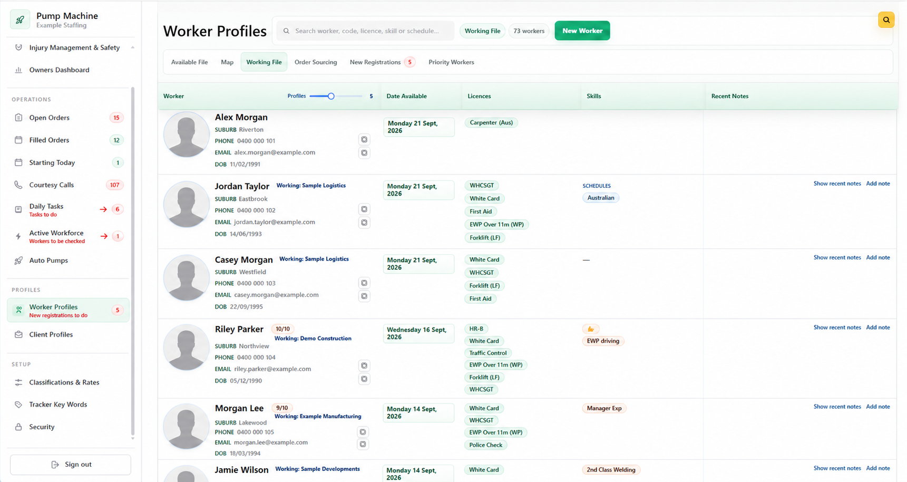

Labour Hire Management System: Time Sheets, Worker Management, Order Forms and Payroll Preperation
 See the Google SheetAutomated code powers the actions.
See the Google SheetAutomated code powers the actions.Workers submit hours without paper or an app.
Workers use a native web link to submit their hours—no app or password required.
Each client receives the right report to approve.
Submitted hours are reviewed, then the system creates a PDF report for each worker and sends it to the correct client for approval.
Approved timesheet data moves automatically.
Software tools speak to each other - data transfers simply.
The Blue Folder prepares both business outputs.
The Blue Folder organises the approved timesheet data into a payroll file and sales data ready to generate invoices.
Example: one worker's weekIllustrative hourly rates — the Blue Folder applies the correct pay and charge rules automatically.
Mon
10hTue
8hWed
12hThu
8hFri
10hTotal
48h
10hTue
8hWed
12hThu
8hFri
10hTotal
48h
Per weekday: first 7.6h normal · next 2h time-and-a-half · then double time
48 hours = 38 normal + 4.8 time-and-a-half + 3.2 double time
Payroll file(38 × $35) + (4.8 × $52.50) + (3.2 × $70) = $1,806
Sales / invoice data(38 × $55) + (4.8 × $82.50) + (3.2 × $110) = $2,838
50% less time spent on admin
PDF Generator & Batch Emailer
×Code turns the review queue into sent PDF reports.
</>Automation codeGenerates PDFs and sends emails.One spreadsheet interface is backed by automation that creates client-specific PDF reports and sends each one to the correct recipient.
Pump Machine
Worker and client management, together with order forms.
Pump Machine was built specifically for Blue Collar People’s requirements. It keeps worker and client profiles alongside order-form management in one relational system. As orders are filled, the relevant information is shared with relevant systems (the Blue Folder).
Worker & client profiles→Order form management→The Blue Folder
Filling and managing orders now takes 20% of the time it used to—giving the team more time to focus on better service for more clients.

Free up your time for the more important things in life while avoiding the cost of hiring extra staff.
Reach out